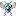
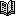
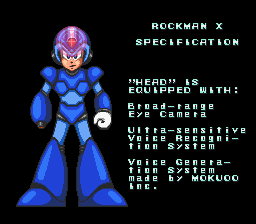
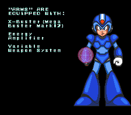
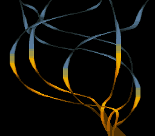
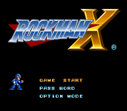
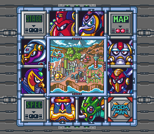

If you'd like to support our preservation efforts (and this wasn't cheap), please consider donating or supporting us on Patreon. Thank you!
Mega Man X
| Mega Man X |
|---|
|
Also known as: Rockman X (JP) This game has hidden development-related text.  This game has a bugs page  This game has a prerelease article |
{kind=link}
{kind=link}
{kind=link}
| To do: According to The Mechanical Maniacs, there are unused sprites of Vile using an arm cannon/buster (also documented on MMKB), as well as an unused Velguarder head sprite and an damaged enemy shield sprite. |
Mega Man X is the first game in the series of the same name. That's why it's called the Mega Man X series. Hrm.
Contents
Sub-Pages
| Prerelease Info |
| Bugs |
Map Editor Mode
{kind=link}
A map editor can be enabled in this game with the following PAR codes:
009E9122
009E923D
009E9383
009E9404
Pressing Start will then bring up the map editor.
Instructions:
Controller 1
- D-pad: Move screen.
- A: Toggle layers.
- B + D-pad: Increase cursor speed.
- Y: Toggles index values / collision data for tiles.
- L + R + X: Exit map editor.
Controller 2
- D-pad: Move tile cursor.
- A: Copy selected tile.
- B + D-pad: Increase tile cursor speed.
- Y: Place tile.
- L, R: Cycle through tiles.
Unused Objects + Object Functions
Anglerge
Use the PAR code 7E0E7381 before fighting the first Anglerge
{kind=link}
There is a third kind of Anglerge boss in the game. The subID for this Anglerge is 81, while the subIDs for the two Anglerges in the final game are 80 and 82. This Anglerge only blows air at X. Since the first Anglerge sucks air in, and the second Anglerge both sucks air in and blows air out, this was probably meant to go in between the two.
The palette is incorrect: the game pulls the palette information from a place that's clearly not supposed to be used.
Hoganmer
Use the PAR code 849E4180 (version 1.0) or 849E4680 (version 1.1), then shoot off Hoganmer's shield.

This enemy is coded to jump when its shield is destroyed. The Hoganmer will jump a short distance (32 pixels?) towards X, then when X is in range, it will attack. Since it's impossible to destroy that shield in the final version, this behavior is never triggered.
In a Spaceworld '93 trailer, at 2:45, X is shown to break the Hoganmer's Shield, complete with the broken shield sprite pictured below. It is unknown if the behavior shown above is programmed in as the enemy is killed before we can tell.
{kind=link}
A broken shield can be found with the rest of Hoganmer's graphics.
Jellyfish
Use the PAR codes 7E0E7210 + 7E0E7301 at the beginning of Launch Octopus' stage to see this enemy in action.
{kind=link}
{kind=link}
This enemy doesn't appear at all in the game, and its behavior is completely unique. It has the same ID as the Sine Faller enemy, but has a subID of 1. The enemy falls down from the ceiling and swoops back and forth. When it collides with the ground, it drills into it, leaving only a small part of its sprite visible above ground. It only takes 1 hit to kill. The enemy graphics are loaded at the start of Launch Octopus' stage; they're replaced after the first Anglerge boss is destroyed.
This enemy is present in the same Spaceworld '93 traileras shown earlier, this time the enemy in question is shown at 2:19. In the clip, it is shown just as you enter the water for the first time, which lines up with where it is loaded into memory in the final game.
Tombot Generator
Use the PAR code 7E0E723E to generate this object
{kind=link}
This unused object spawns Tombots! It starts out closed, then the hatch opens and 2 Tombots fly out. The direction the Tombots are spawned depends on this object's subID. This object can only be damaged when the hatch is open; shots will bounce off when it is closed. When it is destroyed, it starts smoking from the bottom for a bit, then stops.
{kind=link}
{kind=link}
The graphics are still in the ROM, compressed, though they're never loaded anywhere.
Unused Zero Palettes
{kind=link}
Zero has two palettes in the ROM that aren't used in-game at all. Presumably they are for some kind of charging effect. In the final game, his head crystal glows to indicate charging.
These palettes are located at 2C2E0-2C31F in the ROM.
Unused Item Drop
Enemies normally may drop one of five items when killed: small HP, big HP, small ammo, big ammo, or a 1-up. The game code, however, supports enemies dropping sub-tanks. In the final game, sub-tanks are collectable secret items sitting on the ground, rather than dropped from enemies.
To see this behavior, use the following PAR codes and kill an enemy:
| Version 1.0 | Version 1.1 |
|---|---|
| 84A390A9 84A39106 |
84A395A9 84A39606 |
The graphics of the item will be corrupted unless you happen to be near one of the normal sub-tank secrets, but it will count as a sub-tank when acquired.
Unused Audio
This is sound effect #B0. This seems to be a test of the game's audio system, with tones at different levels and volumes. The PAR code 7EFFC9B0 will allow this sound to be played in the sound test.
Unused Boss Entrance Room
{kind=link}
{kind=link}
Directly above Launch Octopus' boss entrance room is a duplicate entrance. This cannot be seen in the normal game as there is no vertical scrolling at this point, and the duplicate entrance is blocked by a solid wall which X cannot grab on nor break through it.
Unused Text
Sample Text
{kind=link}
{kind=link}
These are unused in the game. The text looks like it's left over from a gaming expo copy.
Congratulations
{kind=link}
A message of unknown purpose.
Continue/End
{kind=link}
This menu actually uses four different text IDs (one for the continue / end text, one for the top and bottom border, and two for the left and right borders). It could be a debug menu (something similar appears in Super Metroid), or a game over menu. Similar menus pop up in the NES Mega Man games.
{kind=link}
These tiles are hidden with the rest of the game's graphics, but are never loaded. The border and GAME OVER letters might have been used for this screen, but they might also have been imported from an entirely different game.

There's some tile mapping for the GAME OVER text starting at 0x03163A
Debug Text
{kind=link}
This on the other hand is obvious—it's text for an object viewer. Similar object viewers also appear in Mega Man 6 and Mega Man 7. Unfortunately, it seems to have been removed from all versions of the game. There is no routine that brings this text up.
Title screen beams source illustration
{kind=link}
The 'spinning beams' effect on the title screen is actually an HDMA effect that just shows one row of a bitmap per frame, repeated down the screen. (This of course means that the bitmap in question is not strictly "unused", but it is impossible to see all at once in-game.) This is a demonstration of how the effect works, for those curious. (This gif is based on the International release; see "regional differences" below for the subtle differences in each version).
Regional Differences
Splash Screen
| Japan/US | Europe |
|---|---|
The game was published by Nintendo in Europe, which resulted in the logo splash screen being changed. However, strangely, Capcom's distinctive musical jingle was not removed, and the logo replacement was rather low-effort, resulting in Europe getting a bizarrely anticlimactic splash screen...
Intro
| Japan | International |
|---|---|
|  |
{kind=link}
{kind=link}
X's voice generation device is made by MOKUOO Inc. in the Japanese version and HAYATOM Inc. (a portamentau of Hayato, a Japanese name, and the word atom) in the international versions.
| Japan | International |
|---|---|
|  |
{kind=link}
{kind=link}
The X-Buster is a Rock Buster Mark17 in the Japanese version. In the international versions, it's a Mega Buster Mark17.
The "WARNING MESSAGE" has the text in Japanese scroll across the bottom of the screen.
Title Screen
| Japan | International |
|---|---|
|  |  |
{kind=link}
This ribbon-like design is loaded into the background and used for the color-transitioning effect as the large "X" is formed. The bottom part of the ribbon was changed for the international release, possibly to accommodate the slightly different "X" design. A similar effect would later be used for the title screen of Mega Man Zero.
| Japan | International |
|---|---|
|  |
{kind=link}
Besides the usual title change, the international title logo was redesigned. This design was carried over until Mega Man X3.
Stage Select
| Japan | International |
|---|---|
|  |
{kind=link}
{kind=link}
The Rockman X-Symbol on the Stage Select Screen was obviously updated as well.
Name Changes
All the Mavericks with the exception of Boomer Kuwanger, received different names outside Japan:
| Japan | International |
|---|---|
| Icy Penguigo | Chill Penguin |
| Spark Mandriller | Spark Mandrill |
| Armor Armarge | Armored Armadillo |
| Launcher Octopuld | Launch Octopus |
| Sting Chameleao | Sting Chameleon |
| Storm Eagleed | Storm Eagle |
| Burnin' Noumander | Flame Mammoth |
Also, the Boba Fett look-alike boss character known as Vava (ヴァヴァ) in Japan was renamed Vile.
Other Changes
- Dialogue boxes length in the North American and European versions were expanded from the Japanese's 64 pixels to 88 pixels to fit in more text.
- The European version's epilogue text is formatted differently than in other versions due to PAL timing differences.
Revision Changes
Bug Fixes
| Bug | Japanese version |
North American version |
European version | ||
|---|---|---|---|---|---|
| 1.0 | 1.1 | 1.0 | 1.1 | ||
| The powered up Shotgun Ice platform does not shatter if it's used to kill a boss. This can lead to a bug when fighting Storm Eagle where the player can get credit for defeating him after dying. | Present | Fixed | Fixed | Fixed | Fixed |
| If Sigma and X are killed at the same time, the boss is defeated, but the player does not regain control and can't advance the cutscene dialogue. | Present | Fixed | Present | Fixed | Fixed |
| Several glitchy passwords can start out X with either 0 life or max life and all weapons / Sub-Tanks depending on if the game demo was accessed or not. | Present | Present | Present | Present | Fixed |
| X can walk on the ceiling in the beginning of Flame Mammoth's room by hopping on the Utuboros heads and climbing up the tube. Walking right and climbing up an invisible wall leads to the central room with the palette and enemy graphics incorrectly loaded, as well as an incorrect lower Y boundary. | Present | Present | Present | Present | Fixed |
Mega Man X Collection
| SNES | Collection |
|---|---|
| I guess I'm not powerful enough to defeat him... | Damn! I guess I'm not powerful enough to defeat him... |
For some reason, X's first (and only) line of dialogue in the game was punched up a bit for the PlayStation 2/GameCube Mega Man X Collection. This is slightly closer to the Japanese script, however. The X Legacy Collection version discards this change and uses the original SNES script instead.
| SNES | Collection |
|---|---|
| Why, X?! Why have you done this to us?! | Why, X?! Why you done this to us?! |
Oddly, during Sigma's post-battle dialogue, the word "have" was removed from the sentence in Mega Man X Collection, making it grammatically incorrect.
Miscellaneous
- In Mega Man X Collection, the voice clip that accompanied X's Hadouken technique was muted.
Copy Protection
| To do: Certain Game Genie codes, if used with version 1.1, prevent Boomer Kuwanger's stage from being marked as completed unless switched off. Is this a copy protection measure as well? |
At various points, the game tries to detect whether it's running on a copier. Bad things happen if it decides that it is. Each of these is a separate check, so any or all of these may be enabled depending on the specific tests you fail.
Most of the routines that implement these effects have other code that will attempt to detect if the routines have been removed or modified. If this appears to be the case, some effects may occur more quickly, immediately, or under different conditions.
- You may lose all your upgrades (including sub-tanks) upon starting a stage.
- The 128th time you take damage, the game will start adding random input to yours, and your charged X-Buster shots will be locked in place.
- If the code that does this appears to be tampered with, this will occur immediately after picking up health instead.
- You may be teleported to the beginning of the level when you pick up a power-up or go through the boss door.
- You may have to repeat the introductory stage when an enemy drops an extra life.
- After 128 explosions, enemies that repel bullets may kill you when they do. Power-ups will quickly vanish, and shooting while dashing will cause you to have to repeat the introductory stage.
- If the code that does this appears to be tampered with, and the code that detects said tampering also appears to be tampered with, this will occur about half of the time as soon as the level starts (alternating between on and off every 128 frames).
- After falling down 128 times, the next 127 jumps you make will alternate between normal jumps and small hops instead. You will also take damage while climbing walls and will be unable to use the Ride Armor. Firing shots will teleport you back to the start of the stage.
- If the code that does this appears to be tampered with, this may occur after jumping 128 times, jumping a single time, and/or firing a single shot, depending on which parts of the code have been modified.
Most of these checks involve attempting to write to an area of memory typically reserved for SRAM, which real copies of the game don't have, by writing a value to a specific address and seeing if the same value is present at the same address afterward. Normally, on a real cartridge, these addresses point to ROM due to address mirroring, causing the writes to fail. However, the original Japanese 1.0 release suffered from frequent false positives due to the ROM inadvertently having the "expected" values already present at the right addresses in ROM for the copy protection to falsely think that the writes were successful.
Initially, Capcom solved this by physically rewiring Rockman X cartridges to partially disable ROM mirroring at the affected addresses. Later on, the 1.1 ROM was released, with the SRAM detection fixed to prevent similar false positives from occurring.
- Games developed by Capcom
- Games published by Capcom
- Games published by Nintendo
- SNES games
- Games released in 1993
- Games released in 1994
- Games with hidden development-related text
- Games with unused enemies
- Games with unused graphics
- Games with debugging functions
- Games with regional differences
- Games with revisional differences
- Games with anti-piracy methods
- To do
- Mega Man series
Cleanup > To do
Games > Games by content > Games with anti-piracy methods
Games > Games by content > Games with debugging functions
Games > Games by content > Games with hidden development-related text
Games > Games by content > Games with regional differences
Games > Games by content > Games with revisional differences
Games > Games by content > Games with unused enemies
Games > Games by content > Games with unused graphics
Games > Games by developer > Games developed by Capcom
Games > Games by platform > SNES games
Games > Games by publisher > Games published by Capcom
Games > Games by publisher > Games published by Nintendo
Games > Games by release date > Games released in 1993
Games > Games by release date > Games released in 1994
Games > Games by series > Mega Man series